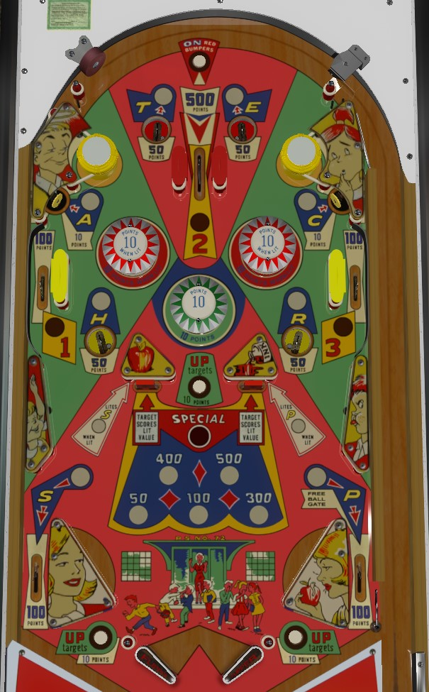

Always try to plunge the top lane, which scores 500 points and is worth more than most entire balls. Collect Teacher's Pet letters to advance the value of the drop targets near the bottom of the table; the closer you get to collecting them in order (T-E-A-C-H-R-S-P), the more the drop targets are worth, but don't get all 8 letters, because then the drop targets are worth Special which scores 0 points. Drops only reset when a lower rollover button is scored. Completing the 1-2-3 lanes near the top of the table opens the Free Ball gate in the right out lane.
The center top lane always scores 500 points. Always try to plunge this lane; most balls that do not make the center top lane will not score 500 points total.
The rollover button above the center top lane lights the red bumpers for 10 points; they score 1 when unlit. The green bumper always scores 10 points. Red bumpers turn off whenever the ball drains.
Collect letters in Teacher's Pet around the playfield. Each unique letter only needs to be collected once; making the E saucer gives credit for all 3 E's in the phrase. T and E are collected from 50-point top saucers. A and C are collected from 10-point upper corner standup targets. H and R are collected from 50-point center saucers. S and P are collected from 100-point out lanes or the wall switches behind the drop targets in the center of the game.
The default value of the drop targets in the center of the table is 50 points each. If T and E are collected, the center drop targets score 100 points; collecting T-E-A-C increases the drop targets to 300 points; collecting T-E-A-C-H increases the drops to 400 points; collecting T-E-A-C-H-R-S increases the drops to 500 points. All of the letters in these combinations are needed to advance the drop target to the respective level; if you have TECHRS and then go back and get the A, the drops will jump straight from 100 points to 500. Collecting all 8 letters in T-E-A-C-H-R-S-P lights the center drop targets for Special for the rest of the game, which scores no points. Drop targets award the currently lit value and never reset on their own; the rollover buttons between the drop targets and in the gaps behind the flipper hinges reset both targets, and are the only way to re-raise the drop targets.
Make a lit top lane to unlight it. Unlighting 1-2-3 opens the Free Ball gate in the right out lane, which redirects the ball back to the shooter lane. Using the free ball gate closes it and resets the 1-2-3 sequence. The status of the free ball gate and the 1-2-3 lanes is preserved across balls and games, so you can walk up to a Teacher's Pet table with the gate pre-opened or only needing 1 more lane to open it.
There are no in lanes. Flippers do NOT back up directly to the slingshots; raising a flipper for too long can cause the ball to roll off the flipper and drain in the gap between the slingshots and flipper hinge. These gaps have rollover buttons that re-raise the drop targets. Out lanes score 100 points and award the S and P in Teacher's Pet.
Specials cannot be worth points. There is no end of ball bonus or extra ball feature. Tilt ends game.